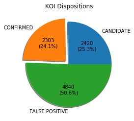
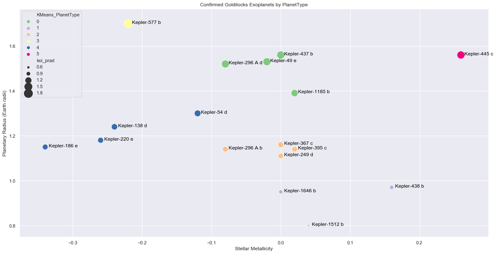
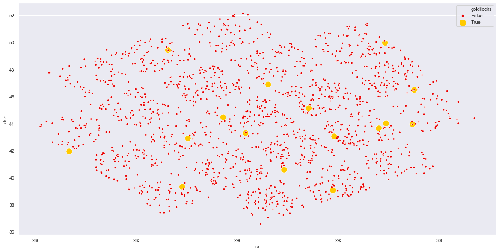

class: center, middle # Exploratory Data Analysis ## Kepler Object of Interest Dataset <img src="https://cdn.mos.cms.futurecdn.net/iVhkhdsWa2cWhqaDqWr4rC.jpg"/> Github Repo: [https://github.com/JamesMcGuigan/dataset-kepler/](https://github.com/JamesMcGuigan/dataset-kepler/) --- # KOI - Kepler Objects of Intrest <table style="width: 100%"> <tr> <td> <table style="text-align: left"> <tr><td>Number of KOIs</td><td>9564</td></tr> <tr><td>Number of Solar Systems</td><td>8214</td></tr> <tr><td>Number of Named Planets</td><td>2305</td></tr> <tr><td> </td></tr> <tr><td>CONFIRMED KOIs</td><td>2303</td></tr> <tr><td>CANDIDATE KOIs</td><td>2420</td></tr> <tr><td>FALSE POSITIVE KOIs</td><td>4841</td></tr> </table> </td> <td>  </td> </tr> </table> # Named False Positives [Kepler-469b](https://twitter.com/exohugh/status/1169262460504875008) - "clearly a binary fold in the wrong period" - Hugh Osborn [Kepler-503b](https://arxiv.org/abs/1805.08820) - An Object at the Hydrogen Burning Mass Limit Orbiting a Subgiant Star --- # FastAI - Neural Network Predictions Using a FastAI Neural Network to predict KOI Disposition (CONFIRMED / CANDIDATE / FALSE POSITIVE) from the other fields in the dataset, NN Config: `layers=[200, 200, 100, 100, 50, 50] weight_decay=0.1 dropout=0.5` <table> <tr> <td> <ul> <li> Only using <code>fpflags</code> and OneHot encoded <code>koi_comments</code> </li> <li>83.3% accuracy</li> <li>20 <code>fit_one_cycle()</code> epocs</li> </ul> <img src="images/FastAI_Training_Loss_1.png" height="262" width="386"/> </td> <td> <ul> <li> Using entire dataset </li> <li>89.6% accuracy</li> <li>Superconvergence</li> <li>5 <code>fit_one_cycle()</code> epocs</li> </ul> </td> </tr> </table> --- # Exoplanet Habitability A key goal of the Kepler Space Telescope is to determine how many Earth-size and larger planets there are in or near the habitable zone (often called "Goldilocks planets") of a wide variety of spectral types of stars. The Goldilocks Zone: - Liquid Water = surface temperature between 273.2K - 373.2K - Earth Sized Rocky Planet = assumed between 0.8 - 1.7 (Earth Radii) **17 potentially habitable exoplanets found!** <table style="width: 100%; text-align: center"> <tr> <td> KMeans Clustering for Planet Type <img src="images/Exoplanet_StarType.png" width="375"/> </td> <td> KMeans Clustering for Star Type  </td> </tr> </table> --- # Where are my habitable exoplanets? The 17 potentially habitable exoplanets plotted on the night sky! <table> <tr> <td> <img src="https://www.nasa.gov/sites/default/files/styles/full_width_feature/public/thumbnails/image/milkyway-kepler-croberts-1-full_0.png" width="300"/> </td> <td>  </td> </tr> </table> - The bottom right of the grid is closest to the Galactic Rim, thus has a greater overall star density - Each square represents the stationary field of view of the Kepler Space Telescope - Kepler was repointed 21 times in a grid search pattern during its 9 year mission